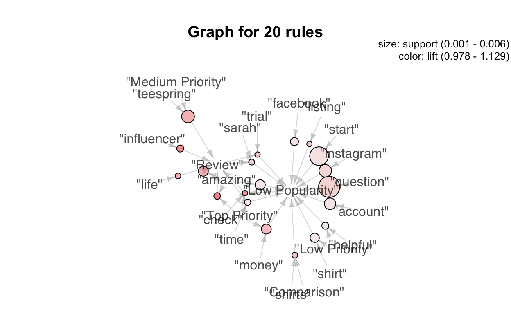

In this article, I will show you customers perspectives on Print On Demand industry on Youtube using social listening techniques.
The article will cover deliverables as shown below.
This article includes the following deliverables aiming to solve business problem of gathering insights of the competitors using their customers reviews on Youtube platform and potential influencers and customers.
You can download the data used in this article here:
I retrieved data from Youtube using Youtube Data API. You can find out more about the use of this Google service here
library(tidyverse)
library(knitr)
library(kableExtra)
library(formattable)
library(ggplot2)
library(tidytext)
library(wordcloud2)
library(gridExtra)
library(arulesSequences)
library(arulesViz)
#Read Data
text = read.csv("data/Cleaned_Data.csv")
# write function to expand contractions in an English-language source
fix.contractions <- function(doc) {
# "won't" is a special case as it does not expand to "wo not"
doc <- gsub("won't", "will not", doc)
doc <- gsub("can't", "can not", doc)
doc <- gsub("n't", " not", doc)
doc <- gsub("'ll", " will", doc)
doc <- gsub("'re", " are", doc)
doc <- gsub("'ve", " have", doc)
doc <- gsub("'m", " am", doc)
doc <- gsub("'d", " would", doc)
# 's could be 'is' or could be possessive: it has no expansion
doc <- gsub("'s", "", doc)
return(doc)
}
# function to remove special characters
removeSpecialChars <- function(x) gsub("[^a-zA-Z0-9 ]", " ", x)
text$text <- sapply(text$text, fix.contractions)
# remove special characters
text$text <- sapply(text$text, removeSpecialChars)
# convert everything to lower case
text$text <- sapply(text$text, tolower)
words_filtered <- text %>%
unnest_tokens(word, text) %>%
anti_join(stop_words) %>%
distinct() %>%
filter(nchar(word) > 3)Most Frequently Used Words in The Comments
words_filtered %>%
count(word, sort = TRUE) %>%
top_n(10) %>%
ungroup() %>%
mutate(word = reorder(word, n)) %>%
ggplot() +
geom_col(aes(word, n), fill = "#CC0000") +
theme(legend.position = "none",
plot.title = element_text(hjust = 0.5),
panel.grid.major = element_blank()) +
xlab("") +
ylab("Comment Count") +
ggtitle("Most Frequently Used Words in The Comments") +
coord_flip()Wordcloud
The “wordcloud” shows all words appeared in the comments by frequency. It gives an overview of what are the most popular words the commenters talk about which reveal some interesting terminologies benefits for insights exploration.
text_count <- words_filtered %>%
count(word, sort = TRUE)
wordcloud2(text_count[1:300, ], size = .5)Base on the graph above, a story could be formed that Teespring is considered a popular topic discussed in the video and the items were discussed about Teespring may include the products, design, shipping, quality, and free.
Base on the graph, a story could be formed that Teespring is considered a popular topic discussed in the video and the items were discussed about Teespring may include the products, design, shipping, quality, and free.
text$LikeCount[between(as.numeric(text$LikeCount),0, 6)] <- "Low Popularity"
text$LikeCount[between(as.numeric(text$LikeCount),6, 12)] <- "Medium Popularity"
text$LikeCount[as.numeric(text$LikeCount) > 12] <- "High Popularity"
#You need to install "textdata" package to use the line below
new_sent <- get_sentiments("nrc")
words_filtered1 <- words_filtered %>%
mutate(words = n_distinct(word)) %>%
inner_join(new_sent)
#You can write CSV of the sentiment results here
#write_csv(words_filtered1, "Sentiment Results.csv")
count_n <- words_filtered1 %>%
count(sentiment, sort = TRUE)
nrc_plot <- words_filtered1 %>%
#filter(videoId == "JXqxDoteTuk") %>%
group_by(sentiment) %>%
summarise(word_count = n()) %>%
ungroup() %>%
mutate(sentiment = reorder(sentiment, word_count)) %>%
#Use `fill = -word_count` to make the larger bars darker
ggplot(aes(sentiment, word_count, fill = -word_count)) +
geom_col() +
guides(fill = FALSE) + #Turn off the legend
labs(x = NULL, y = "Word Count") +
scale_y_continuous(limits = c(0, 15000)) + #Hard code the axis limit
ggtitle("Sentiment Analysis") +
coord_flip()
plot(nrc_plot)The graph shows most people express positive sentiment towards the topic and only about 25 percent express negative sentiment towards the topic.
Association rules mining is the model created to investigate how the items associated with each other. Rules created by the algorithm consist of number of combinations of different items that are highly associated with each other.
data_prep <- words_filtered %>%
select(word,LikeCount,Recent,Topic)
data_prep <- lapply(data_prep, as.factor)
#Export the DataFrame into txt
#write.table(data_prep, "patterns.txt", sep = ",")
#Read the exported txt file as Transactions
trans_matrix <- read_baskets("data/patterns.txt", sep = ",")
#Fit the model
association.rules <- apriori(trans_matrix, parameter = list(supp=0.001, conf=0.9, maxlen = 5))
Apriori
Parameter specification:
confidence minval smax arem aval originalSupport maxtime support
0.9 0.1 1 none FALSE TRUE 5 0.001
minlen maxlen target ext
1 5 rules TRUE
Algorithmic control:
filter tree heap memopt load sort verbose
0.1 TRUE TRUE FALSE TRUE 2 TRUE
Absolute minimum support count: 41
set item appearances ...[0 item(s)] done [0.00s].
set transactions ...[48420 item(s), 41020 transaction(s)] done [0.13s].
sorting and recoding items ... [164 item(s)] done [0.01s].
creating transaction tree ... done [0.01s].
checking subsets of size 1 2 3 4 done [0.00s].
writing ... [606 rule(s)] done [0.00s].
creating S4 object ... done [0.01s].
summary(association.rules)
set of 606 rules
rule length distribution (lhs + rhs):sizes
1 2 3 4
1 166 314 125
Min. 1st Qu. Median Mean 3rd Qu. Max.
1.000 2.000 3.000 2.929 3.000 4.000
summary of quality measures:
support confidence coverage
Min. :0.001024 Min. :0.9000 Min. :0.001024
1st Qu.:0.001268 1st Qu.:0.9259 1st Qu.:0.001316
Median :0.001609 Median :0.9454 Median :0.001706
Mean :0.008132 Mean :0.9484 Mean :0.008648
3rd Qu.:0.002529 3rd Qu.:0.9728 3rd Qu.:0.002706
Max. :0.934934 Max. :1.0000 Max. :1.000000
lift count
Min. :0.9626 Min. : 42.0
1st Qu.:1.0054 1st Qu.: 52.0
Median :1.0384 Median : 66.0
Mean :1.0476 Mean : 333.6
3rd Qu.:1.0774 3rd Qu.: 103.8
Max. :1.1851 Max. :38351.0
mining info:
data ntransactions support confidence
trans_matrix 41020 0.001 0.9
#Plot Association Rules
plot(association.rules, measure = c("support", "lift"), shading = "confidence")
#Top 20 Rules
library(RColorBrewer)
twenty_rules <- sample(sort(association.rules,by = "lift"), 20)
plot(twenty_rules, method = "graph")
twenty_rules <- as(twenty_rules, "data.frame") %>%
separate(rules,
into = c("lhs","rhs"),
sep = "=>")The circles represent rules generated by the algorithm. The red shaded colour represents lift value, while the size of the circle represents confidence value of the rule. All the arrows that are pointing into the circle represent combinations in the “lhs” (left hand side), while the arrow pointing from the circle represents the result “rhs” (right hand side) if the condition during the game met all the combinations on the “lhs”.
Clean the results generated from the algorithm and export them for detailed analysis
#All Rules
rules_ <- sort(association.rules, by = "lift")
rules_ <- as(rules_, "data.frame")
#Separate Rules column into "lhs" and "rhs"
rules_ <- rules_ %>%
separate(rules,
into = c("lhs", "rhs"),
sep = "=>")
#Remove unimportant character on the rhs column
rules_$rhs <- gsub("[^[:alnum:]]", "", rules_$rhs)
#Write CSV
#write.csv(rules, "data/rules.csv")a) More data needed. Types of data may include:
b) The report could generate better insights if there are more times to invest on data retrieval.